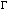

Legacy Document
Important: The information in this document is obsolete and should not be used for new development.
Important: The information in this document is obsolete and should not be used for new development.


Operations and Functions
- Note
- Throughout the tables that follow, in the Exceptions column, I = invalid; X = inexact; O = overflow; U = underflow; D = divide-by-zero.
Table E-6 Arithmetic operations Compute Syntax Valid input range Exceptions Sum x + y to + 
I X O U - Difference x - y to + I X O U - Product x * y to + I X O U - Quotient x / y to + I X O U D Square root sqrt(x) 0 to + I X - - - Remainder remainder(x,y)
remquo(x,y,quo)
fmod(x,y)to + I - - - -
Table E-7 Conversions to integer type Compute Syntax Valid input range Exceptions Round in current direction rinttol(x)[75] I X - - - Add 1/2 to magnitude and chop roundtol(x)[75] I X - - -
Table E-8 Conversions to integer in floating-point type Compute Syntax Valid input range Exceptions Round in current direction rint(x) to + - X - - - nearbyint(x) to + - - - - - Round upward ceil(x) to + - - - - - Round downward floor(x) to + - - - - - Add 1/2 to magnitude and chop round(x) to + - X - - - Round toward zero trunc(x) to + - - - - -
Table E-9 Conversions between binary and decimal formats Compute Syntax Valid input range Exceptions Convert decimalstruct to binarydec2num(&d) decimalstruct- - - - - Convert binary to decimalstructnum2dec(&f,x,&d) to + - - - - -
Table E-10 Conversions between decimal formats Compute Syntax Valid input range Exceptions Convert decimalstruct to stringdec2str(&f,&d,s) decimalstruct- - - - - Convert decimal string to struct str2dec(s,&ix,&d,&vp) Numeric string - - - - -
Table E-11 Comparison operations Compute Syntax Valid input range Exceptions Positive difference or 0 fdim(x,y) to + - X O U - Maximum of 2 numbers fmax(x,y) to + - - - - - Minimum of 2 numbers fmin(x,y) to + - - - - - Relationship of x, y relation(x,y) to + - - - - -
Table E-12 Sign manipulation functions Compute Syntax Valid input range Exceptions Copy the sign copysign(x,y) to + - - - - - |x| fabs(x) to + - - - - -
Table E-13 Exponential functions Compute Syntax Valid input range Exceptions exp(x) to + - X O U - exp2(x) to + - X O U - expm1(x) to + - X O U - ldexp(x,n) to + - X O U - scalb(x,n) - X O U - pow(x,y) to + I X O U D
Table E-14 Logarithmic functions Compute Syntax Valid input range Exceptions Fraction and exponent fields of floating-point number frexp(x,&n) to + - - - - - ln x log(x) 0 to + I X - - D log10(x) 0 to + I X - - D ln (x + 1) log1p(x) > -1 I X - - D log2(x)0 to + I X - - D Exponent field of floating-point number logb(x)to + - - - - D Split real number into fractional part and integer part modf(x,&y)to + - - - - -
Table E-15 Trigonometric functions Compute Syntax Valid input range Exceptions cos x cos(x) Any finite number I X - - - sin x sin(x) Any finite number I X - U - tan x tan(x) Any finite number I X - U - arccos x acos(x) -1 to +1 I X - - - arcsin x asin(x) -1 to +1 I X - U - arctan x atan(x) to + - X - U - arctan y/x atan2(x,y) to + - X - U -
Table E-16 Hyperbolic functions Compute Syntax Valid input range Exceptions cosh x cosh(x) to + - X O - - sinh x sinh(x) to + - X O U - tanh x tanh(x) to + - X - - - arccosh x acosh(x) 1 to + I X - - - arcsinh x asinh(x) to + - X - U - arctanh x atanh(x) -1 to +1 I X - U -
Table E-17 Financial functions Compute Syntax Valid input range Exceptions Compound interest compound(r,p) 0 to + I X - - D Annuity annuity(r,p) 0 to + I X - - D
Table E-18 Error and gamma functions Compute Syntax Valid input range Exceptions error erf(x) to + - X - U - 1 - error erfc(x) to + - X - U - (x) gamma(x) 0 to + I X O - - ln(|(x)|) lgamma(x) 0 to + I X O - -
Table E-19 Miscellaneous functions Compute Syntax Valid input range Exceptions Create NaN nan(tagp) character string - - - - - Next representable number after x in direction of y nextafterd(x,y) to + - X O U - Hypotenuse hypot(x,y) to + - X O U - Random number generator randomx(&x) - - - - - 
[75] Return type oflong int.